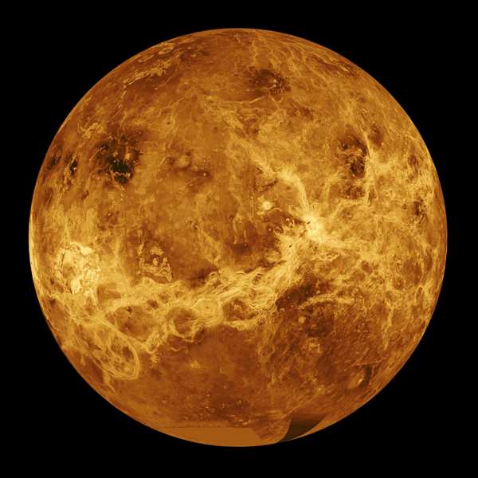

Venus
Venus is the second planet from the Sun.
It is the second brightest object in the night sky after the Moon.
The surface of the planet is obscured by an opaque layer of clouds made up of sulfuric acid.

About Venus
- Mass: 4.867×10^24 kg (0.815 x Earth)
- Equatorial Diameter: 12,104 km
- Equatorial Circumference: 38,025 km
- Moons: none
- Orbit Distance: 108,209,475 km (0.73 AU)
- Orbit Period: 224.70 Earth days
- Surface Temperature: 462°C
Top Facts
- A day on Venus lasts longer than a year
- Venus rotates counter-clockwise
- Atmospheric pressure on Venus is 92 times greater than the Earth’s
- Venus is also known as the Morning Star and the Evening Star